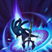

E - 장난치기(Playful)/재간둥이(Trickster)
피즈의 핵심이자 게임 내에서도 최고의 회피기로 악명이 높은 스킬
첫 번째 시전 시에는 해당 방향으로 최대 400 거리만큼 이동하는데 발동 즉시 대상 지정 불가 상태가 된다. 이후에는 두 번째 시전인 재간둥이를 하느냐 마느냐로 달라지는데, 두 번째 시전을 안 하고 있으면 첫 번째 시전한 곳에서 잠시 서 있다가 제자리, 혹은 툴팁에는 없지만 마우스 우클릭을 한 장소로 약간 이동하며 바닥을 내리쳐서 대미지와 둔화를 준다. 두 번째 시전을 한다면 즉시 그 방향으로 최대 400 거리만큼 움직이며 역시나 땅을 내리친다. 이때는 앞의 경우보다 범위도 작고, 둔화도 없지만 피해량은 동일하다. 그리고 두 경우 모두 시전이 끝나기 전까지 대상 지정 불가 상태가 유지된다.
피즈 유저들의 숙련을 알아볼수가 있는 스킬이기도 하며 성능은 말 그대로 모든 면에서 우월하다. 이동 거리도 2번의 시전을 다 마치면 꽤나 길고, 피해량도 기본 수치와 계수 모두 핵심 누킹 기술급으로 강력하다. 또한 재간둥이를 사용하지 않았을 때 주어지는 감속도 엄청나게 높으며, 쿨타임도 회피기치곤 말도 안되게 짧다. 그리고 무엇보다 발동 즉시 끝까지 부여되는 대상 지정 불가 상태로 인해 엄청난 생존력까지 부여해 숙련된 피즈는 이 스킬 하나로 진입부터 생존까지 해결할 수 있어 X발둥이라는 멸칭까지 얻었다.
활용도도 엄청나게 높아서 다양하게 사용된다. 주 사용처는 적에게 반격받지 않고 돌진하여 누킹을 하던가, 적의 핵심 기술을 회피하는 것 이다. 혹은 둘 다 하던가. 이러한 전술이 적에게 얼마나 효과적으로 먹히는지가 피즈를 선택하는데에 있어서 핵심 요소일 정도. 그리고 이동기이니 만큼 도주용으로도 좋다. 벽도 넘을 수 있고 대상지정 불가로 인해 후속타도 피할 수 있다. 물론 광역 피해 기술이니 라인 푸시용으로도 가능하다.